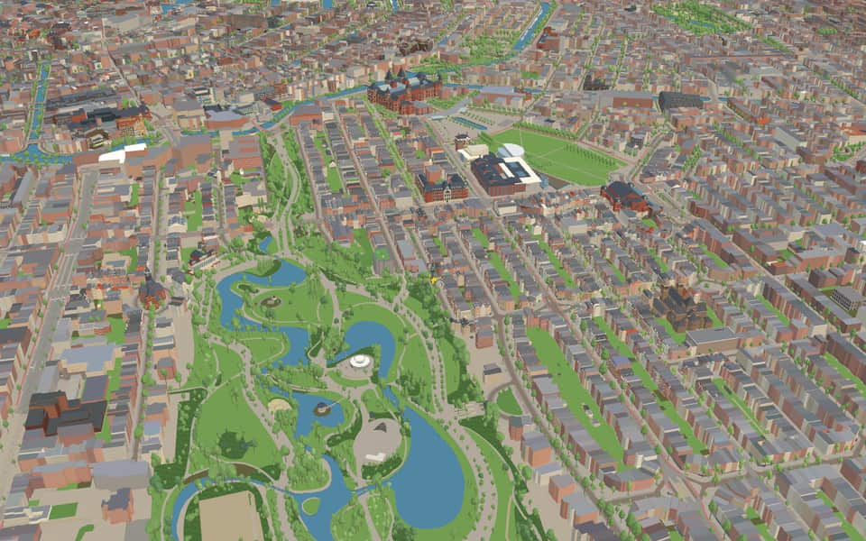
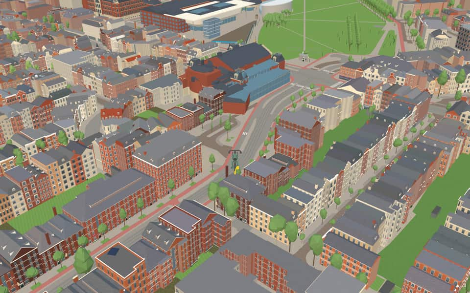
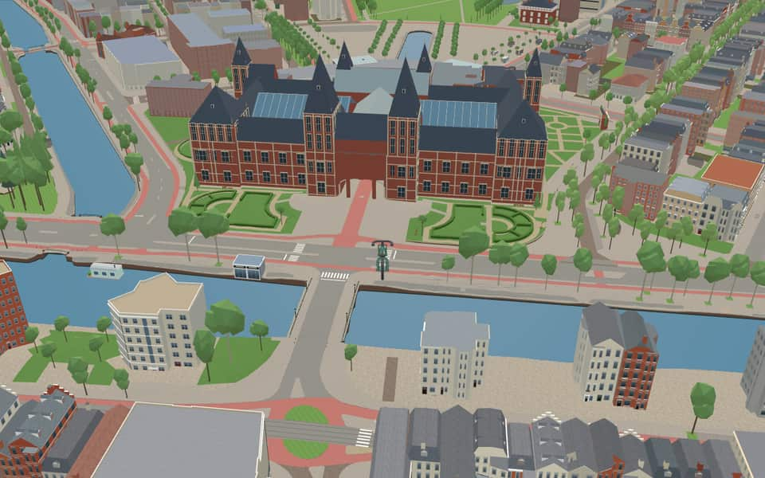
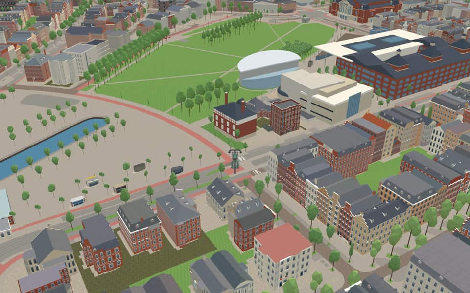

Quarter in Oud-Zuid
Museumkwartier
Museumkwartier (the Museum Quarter) is a neighbourhood of Amsterdam, Netherlands, located in the borough of Amsterdam-Zuid. It is bordered by the Stadhouderskade, Vondelpark, Emmastraat, Reinier Vinkeleskade and the Hobbemakade. en.wikipedia.org
The name. The neighbourhood takes its name from the major museums at Museumplein: the Rijksmuseum, the Stedelijk Museum and the Van Gogh Museum. en.wikipedia.org


In the game
Frames from a ride through Museumkwartier.




6 more photos of Museumkwartier


%2C_Amsterdam_(2023)_01.jpg){kind=link}


.jpeg){kind=link}

.jpg){kind=link}
Built here
Buildings modelled one by one for the ride.
Royal Concertgebouw
Rijksmuseum
Moco Museum
- No picture yet
Van Gogh Museum

Vondelpark Open Air Theater / stage canopy
- No picture yet
Herepoort / Bergpoort — Rijksmuseum garden

Huize Lydia / Huis van de Wijk Lydia
Photo: Amsterdam Huize Lydia 001.JPG (Janericloebe, CC BY 3.0)
- No picture yet
Sint-Petrus-en-Pauluskerk
- No picture yet
Stedelijk Museum

Vondelmonument
Photo: Joost van den Vondel -monument.JPG (Hullernuc, CC BY-SA 3.0)
- No picture yet
Mama Baranka (Moeder Rots, Vondelpark)
- No picture yet
Obrechtkerk

Raw Aron Schuster Synagoge
Photo: Amsterdamrawaronschustersynagoge.jpg (Fnorp at Dutch Wikipedia, CC BY-SA 3.0)
- No picture yet
Blauwe Theehuis
- No picture yet
Figure decoupee (Picasso, Vondelpark)
- No picture yet
Groot Melkhuis
- No picture yet
Kazerne Dirk
- No picture yet
Mandarin Oriental Conservatorium, Amsterdam
- No picture yet
Vondelpark Muziektent / iron bandstand
- No picture yet
Obrechtkerk
Rijksmuseum
- No picture yet
Stedelijk
- No picture yet
Van Gogh Museum


Did you know
Trivia the ride can show you here.
- A neighbourhood centred on Amsterdam’s major museums and cultural institutions. Wikipedia
- Its houses include many Art Nouveau details. Wikipedia
- The street layout draws on designs by Pierre Cuypers from 1891. Wikipedia
- ConcertgebouwConstruction started in a pasture outside Amsterdam that later became part of Amstelveen. en.wikipedia.org
- ConcertgebouwA massive inaugural performance featured 120 musicians and 500 singers on stage. en.wikipedia.org
- ConcertgebouwThe Dutch term Concertgebouw translates directly to concert building. en.wikipedia.org
- ConcertgebouwQueen Beatrix granted the royal title Koninklijk on April 11, 2013. en.wikipedia.org
- HerepoortFour distinct versions of the gate were constructed between the 11th and early 17th centuries. nl.wikipedia.org
- HerepoortCity archaeologist Kortekaas dates the first Herepoort to around the year 1100. nl.wikipedia.org
- Huis van de wijk LydiaThe original construction between 1924 and 1927 included 158 sleeping quarters for women and girls. nl.wikipedia.org
- Huis van de wijk LydiaThe Amsterdam chess club Caïssa maintains its dedicated playing room within this building. nl.wikipedia.org
- Mama Baranka (Moeder Rots)The sculpture stands directly on the ground without a pedestal to symbolize the woman's power and connection to the earth. nl.wikipedia.org
- Moco MuseumKim Logchies-Prins and Lionel Logchies founded the museum in 2016 as an independent initiative. en.wikipedia.org
- Moco MuseumThe Amsterdam location opened in 2016 inside a historic townhouse. en.wikipedia.org
55 more facts
- Moco MuseumEduard Cuypers designed the building, being the nephew of Pierre Cuypers. en.wikipedia.org
- ObrechtkerkBishop Augustinus Callier consecrated the church in 1911. en.wikipedia.org
- ObrechtkerkArtists including Jan Eloy Brom and Otto van Rees contributed to the church's decoration. en.wikipedia.org
- Ravensbrück memorialThe monument honors Dutch women who perished in the Nazi camp Ravensbrück. nl.wikipedia.org
- Ravensbrück memorialThe initiative for this war monument was taken in 1972 by the Vrouwen Committee of Ravenbrück. nl.wikipedia.org
- Ravensbrück memorialEleven stainless steel panels arranged in a semicircle reflect light and sound from a central pillar. nl.wikipedia.org
- Ravensbrück memorialLight flashes symbolizing searchlights are separated by moments of silence between signals. nl.wikipedia.org
- Raw Aron Schuster SynagogeThe Raw Aron Schuster Synagoge was named after Rabbi Aron Schuster, who retired in 1973 to live in Jerusalem. nl.wikipedia.org
- Raw Aron Schuster SynagogeAfter World War II, the first service resumed on Rosh Hashanah 1945 using reassembled pre-war sofas. nl.wikipedia.org
- Raw Aron Schuster SynagogeHans Bloemendal served as the synagogue's cantor from 1949 until 2009. nl.wikipedia.org
- RijksmuseumEarly holdings lacked works by Rembrandt, Vermeer, or Frans Hals despite their fame. en.wikipedia.org
- RijksmuseumNapoleon took the stadholder's collection to Paris before it returned in 1815. en.wikipedia.org
- RijksmuseumThe exhibition featured marriage portraits of Marten Soolmans and Oopjen Coppit. en.wikipedia.org
- RijksmuseumOver 300 prints were shown alongside 22 paintings and 60 drawings in one collection. en.wikipedia.org
- Sint-Petrus-en-PauluskerkA rare Dordrecht Rotating Tabernacle from 1789 is housed within this church. nl.wikipedia.org
- Stedelijk Museum AmsterdamThe original 19th-century structure was designed by architect Adriaan Willem Weissman. en.wikipedia.org
- Stedelijk Museum AmsterdamA modern wing housing the current entrance was added in the 21st century by Benthem Crouwel Architects. en.wikipedia.org
- Van Gogh MuseumArchitects Gerrit Rietveld and Kisho Kurokawa designed the buildings. en.wikipedia.org
- Van Gogh MuseumA technology-driven immersive exhibition launched there in 2019. en.wikipedia.org
- Van Gogh MuseumJohanna van Gogh-Bonger sold many paintings to spread knowledge while keeping a private collection. en.wikipedia.org
- Van Gogh MuseumThe collection was transferred to the state-initiated Vincent van Gogh Foundation in 1962. en.wikipedia.org
- VondelmonumentThe municipality of Amsterdam acquired the full park in 1953, though it held only the statue's square meters since 1868. nl.wikipedia.org
- VondelmonumentIn 1942, the monument celebrated its 75th anniversary during the Occupation. nl.wikipedia.org
- VondelmonumentNapoleon III is specifically mentioned as one of the crowned heads who contributed to the statue. nl.wikipedia.org
- Vondelpark Open Air TheaterAttendees pay no entry fee, though a voluntary donation is requested for the free summer shows. nl.wikipedia.org
- Vondelpark Open Air TheaterThe theater has hosted amateur and professional performances every summer since 1974. nl.wikipedia.org
- Zigeunermonument - Hel en VuurRoma and Sinti gather annually at the site on August 1st to commemorate the Auschwitz gassings. nl.wikipedia.org
- Museum SquareA 1999 reconstruction by Sven-Ingvar Andersson added underground parking and a supermarket. en.wikipedia.org
- Museum SquareThe famous I AMsterdam sign stood here until city officials removed it in December 2018. en.wikipedia.org
- Museum SquareVisitors can explore the House of Bols and the Diamond Museum on this site. en.wikipedia.org
- BoerenweteringbrugHildo Krop created inward-facing sculptures that stand as blind pillars on the supports. nl.wikipedia.org
- BoerenweteringbrugLocal legend claims these images refer to a poem by Abraham Eliazer van Collem. nl.wikipedia.org
- CeintuurbrugPiet Kramer designed the current structure in 1927 using alternating horizontal and vertical bricks. nl.wikipedia.org
- CeintuurbrugA major renovation began in 2014 to widen the bridge and replace a tram stop that had served commuters for 110 years. nl.wikipedia.org
- Hanny MichaelisbrugPiet Kramer designed this structure using the distinctive Amsterdam School style around 1927. nl.wikipedia.org
- Timo SmeehuijzenbrugPiet Kramer designed this Amsterdam School structure featuring alternating brick and natural stone. nl.wikipedia.org
- Timo SmeehuijzenbrugSculptures of two seals and two snakes by Hildo Krop adorn the bridge pillars. nl.wikipedia.org
- VondelbrugSimplified plans removed original features like climbing ivy and a park ranger's cottage due to lack of funds. nl.wikipedia.org
- BoerenweteringThe ditch was widened after the Amsteldijk was built to drain sinking polder land further north. nl.wikipedia.org
- Noorder AmstelkanaalThe canal is absent from street name and postal code books because its banks have different names. nl.wikipedia.org
- Noorder AmstelkanaalTram line 5 crosses the canal on the Timo Smeehuijzenbrug. nl.wikipedia.org
- Noorder AmstelkanaalThe Lyceumbrug connects the Amsterdam Lyceum to Olympiaplein. nl.wikipedia.org
- SingelgrachtThe name Singelgracht derives from the Dutch word omsingelen, meaning to surround. en.wikipedia.org
- SingelgrachtStreets like Marnixkade line the inside while Nassaukade runs along the outside. en.wikipedia.org
- HobbemakadeThe name honors Meindert Hobbema, a landscape painter who lived from 1638 to 1709. nl.wikipedia.org
- HobbemakadeA different Hobbemakade once existed on the site of today's Museumplein until 1893. nl.wikipedia.org
- HobbemakadeImportant buildings along this route include the Zuiderbad swimming pool and the Montessori Lyceum Amsterdam. nl.wikipedia.org
- KoninginnewegA bridge over the Schinkel connecting the street to Hoofddorpweg has stood since 1927. nl.wikipedia.org
- StadhouderskadeStadhouderskade was named in 1872 to honor stadholders William II and William III. nl.wikipedia.org
- StadhouderskadeA rainwater retention basin sits beneath the street near the Rijksmuseum. nl.wikipedia.org
- StadhouderskadeStadhouderskade 55 once housed a chapel, then the Van Nispenhuis which burned down before becoming the Willemshuis. nl.wikipedia.org
- StadhouderskadeA double symmetrical townhouse on Stadhouderskade may have been the home of pediatrician Sybren Schippers. nl.wikipedia.org
- StadionwegArchitect Harry Elte designed the original stadium that gave Stadionweg its name. nl.wikipedia.org
- StadionwegThe path is broken into three parts by two interruptions at Minervaplein and Olympiaplein. nl.wikipedia.org
- StadionwegStadionweg leads directly to the Olympic Stadium. nl.wikipedia.org
Names on the map
Where the canal, bridge and street names come from.
Canals and water
- BoerenweteringThe name of the watercourse that originally ran from the Kalfjeslaan to what is now the Koningsplein. It was formerly also called the Oude Wetering, as opposed to the Nieuwe Wetering (Kostverlorenvaart). The Weteringbuurt and the Weteringschans take their names from this wetering (drainage canal).
- Noorder AmstelkanaalA canal linking the Amstel and the Schinkel.
- SingelgrachtA singel is a stretch of water or a road along the outer edge of a town. In Amsterdam the Singel (Amsterdammers say 'het Singel') formed the city boundary in the second half of the fifteenth century, inside which the walls and gates were built. At that time the moat was called 't Singel or the Stedegracht (now the Singel, Kloveniersburgwal and Geldersekade). Today's Singel has kept the old name. In the seventeenth century the city government did introduce the name Koningsgracht for it, but that name did not stick.
1 other canal without a recorded story
De Kom
Bridges
- BoerenweteringbrugThe name of the watercourse that originally ran from the Kalfjeslaan to what is now the Koningsplein. It was formerly also called the Oude Wetering, as opposed to the Nieuwe Wetering (Kostverlorenvaart). The Weteringbuurt and the Weteringschans take their names from this wetering (drainage canal).Bridge 406: a steel bridge for road traffic, dated 1926 in the city's bridge register.
- CeintuurbrugAt the end of the nineteenth century a ring road (ceintuurweg, or belt) was laid around a large part of the city. The stretch between the Boerenwetering and the Amstel was later named Ceintuurbaan. The other stretches later got other names, because a section in between was not yet part of Amsterdam at the time.Bridge 116: a steel bridge for road traffic, dated 2015 in the city's bridge register.
- Hanny MichaelisbrugHanny Michaelis (Amsterdam, 19 December 1922 - Amsterdam, 11 June 2007) was a poet, writer and translator. She made her debut in 1949 with Klein voorspel (little prelude). Up to 1971 five more collections of new poems appeared. She also wrote (autobiographical) prose and made a number of translations.Bridge 405: a steel bridge for road traffic, dated 1927 in the city's bridge register.
- KorrelbrugThis fixed bridge is named after the Korrel family, who ran a dairy shop at Eerste Jan Steenstraat 4 from 1947 to 1985. The bridge is also meant as a tribute to the many small shopkeepers of the 1950s, 60s and 70s who have disappeared, a time when you could still buy on tick.Bridge 143: a steel bridge for road traffic, dated 1897 in the city's bridge register.
- Timo SmeehuijzenbrugTimo Smeehuijzen was a 20-year-old soldier killed in Afghanistan on 15 June 2007. Before that he went to school at the nearby Fons Vitae lyceum, hence this location. The bridge also honours all the other soldiers who died in Afghanistan.Bridge 407: a steel bridge for road traffic, dated 1926 in the city's bridge register.
- VondelbrugJoost van den Vondel (1587-1679) was a poet who wrote many tragedies, the best known of which is 'Gijsbrecht van Aemstel'.
Streets
- Albert CuypstraatLandscape and portrait painter (1620-1691). The street was laid out after the Zaagmolensloot was filled in. Until the second half of the nineteenth century, a number of timber sawmills stood here. In 2005 the Albert Cuypmarkt, which is held in this street, marked its hundredth anniversary.
- Alexander BoersstraatAlexander Boers (1842-1890), burgomaster of Nieuwer-Amstel from 1885 to 1890. The street belonged to that municipality until 1 May 1896.
- Balthasar FloriszstraatBalthasar Florisz van Berkenrode (1591-1644), cartographer and land surveyor. In 1625 and 1644 he made large, highly accurate maps of Amsterdam.
- BanstraatJoan Albert Ban (1597-1644), priest and composer. Among other works, he set texts by Vondel and Tesselschade to music.
- Bartholomeus RuloffsstraatConductor (1740-1801), organist of the Westerkerk and director of the orchestras of the Stadsschouwburg and Felix Meritis. He wrote the music for Van Alphen's children's songs.
- BrandweerbrugNamed after the fire station next to it.
- BronckhorststraatJohannes G. Bronckhorst (1603-1662), painter and glass painter of historical scenes (windows in the Nieuwe Kerk and the Palace on the Dam).
- CeintuurbaanAt the end of the nineteenth century a ring road (ceintuurweg, or belt) was laid around a large part of the city. The stretch between the Boerenwetering and the Amstel was later named Ceintuurbaan. The other stretches later got other names, because a section in between was not yet part of Amsterdam at the time.
- CeintuurbrugAt the end of the nineteenth century a ring road (ceintuurweg, or belt) was laid around a large part of the city. The stretch between the Boerenwetering and the Amstel was later named Ceintuurbaan. The other stretches later got other names, because a section in between was not yet part of Amsterdam at the time.
- ConcertgebouwpleinThe concert hall, built between 1882 and 1888 by A.L. van Gendt. Shortly after it opened, the Concertgebouw Orchestra was founded. The square got this name to mark the Concertgebouw's centenary. Before that it was the Jan Willem Brouwersplein (council decision of 3 April 1912).
- Cornelis AnthoniszstraatPainter, engraver and cartographer (1500 - after 1559), known for his maps of Amsterdam. In 1536 he made a painted map; his detailed woodcut dates from 1544.
- Cornelis SchuytstraatComposer and organist (1557-1616), known above all as an organist.
63 more streets with a story
- Cornelis van der LindenstraatConductor and composer (1839-1918) of operas, cantatas and overtures. Conductor of the Hollandse Opera from 1886 to 1903.
- Daniël de LangestraatMusician (1841-1918) who composed symphonies and cantatas. One of the founders, and director, of the Amsterdam Conservatory.
- De LairessestraatGerard de Lairesse (1641-1711), painter of allegories and of wall and ceiling paintings. He came to Amsterdam from Liège in 1667. His 'Groot schilderboek' (great book of painting) appeared in 1707.
- Eerste Constantijn HuygensstraatPoet and prose writer (1596-1687), whose works include 'Hofwijck' and epigrams (sneldichten). He was secretary to several successive stadholders. Before 1894 parts of these streets were called Eerste and Tweede Bilderdijkstraat (council decisions of 15 May 1878 and 19 December 1883).
- Eerste Jacob van CampenstraatArchitect (1595-1659), designer of the city hall on the Dam, now the Royal Palace, though he was not allowed to finish the work. Van Campen also built the Heiligewegspoort in 1636, and a palace in Rijswijk for Prince Frederik Hendrik in 1657. The split into Eerste and Tweede came after the stretch of street between them was sold to the Heineken brewery in 1930.
- EmmastraatAdelheid Emma Wilhelmina Theresia of Waldeck-Pyrmont (1858-1934), second wife of King Willem III, Queen Regent from 1890 to 1898, and mother of Queen Wilhelmina.
- Frans van MierisstraatFrans van Mieris the Elder (1635-1681), painter of genre and history pieces. His father and his son were also well-known painters.
- Gabriël MetsustraatPainter (1629-1667), mainly of genre pieces, and a pupil of Gerard Dou. A street had already been named after Metsu on 10 June 1880, but that name was changed to Paulus Potterstraat in 1893.
- Gerard TerborgstraatPainter (1617-1681) of portraits and genre pieces.
- HacquartstraatCarolus Hacquart (1640-1730), musician, who wrote pieces for the viola da gamba and was a gamba player at the court of the Oranges.
- HarmoniehofA basic concept of music theory (harmony).
- Hein DonnerbrugJan Hein Donner (1927-1988) was a chess grandmaster who was Dutch champion several times. He was also a polemicist and a columnist for NRC Handelsblad.
- HeinzestraatGustav Adolph Heinze (1820-1904), German by birth, conductor in Amsterdam of the German Opera, the Liedertafel Euterpe and the Vincentius concerts. From 1862 to 1885 director of the Toonkunst music school. He composed cantatas and oratorios.
- HobbemakadeMeindert Hobbema (1638-1709), landscape painter, a pupil of Ruisdael.
- HobbemastraatMeindert Hobbema (1638-1709), landscape painter, a pupil of Ruisdael.
- HondecoeterstraatMelchior d'Hondecoeter (1636-1695), painter of animals and still lifes.
- HonthorststraatGerard van Honthorst (1590-1656), painter of portraits and night scenes, court painter to Frederik Hendrik.
- J.J. ViottastraatJoannes Josephus Viotta (1814-1859), physician in Amsterdam of Italian descent, and also a composer of church music and of popular songs to texts by J.P. Heije.
- Jacob ObrechtpleinComposer (1430-1505), for many years active abroad, among other things as a choirmaster. He composed a great many masses and motets. The street was taken over in 1896 from the municipality of Nieuwer-Amstel under the name Paviljoenstraat (council decision of Nieuwer-Amstel, 7 February 1896).
- Jacob ObrechtstraatComposer (1430-1505), for many years active abroad, among other things as a choirmaster. He composed a great many masses and motets. The street was taken over in 1896 from the municipality of Nieuwer-Amstel under the name Paviljoenstraat (council decision of Nieuwer-Amstel, 7 February 1896).
- Jan LuijkenstraatPoet and engraver (1649-1712), popular above all for 'Het menselyk bedryf' (the human occupations), which he made with his son Caspar. By council decision of 27 February 1895 the street name was extended over a longer stretch, which was reversed by council decision of 3 April 1912.
- Jan van GoyenkadePainter (1596-1656), mainly of landscapes.
- Jan Willem BrouwersstraatJoannes Wilhelmus Brouwers (1831-1893), Roman Catholic priest, journalist and writer, co-editor of the daily 'De Tijd' from 1863 to 1870 and parish priest in Bovenkerk from 1870.
- Joh.M. CoenenstraatJohannes Meinardus Coenen (1825-1899), musician, who composed choral works, ballets and operas, and conducted concerts in Felix Meritis and the Paleis voor Volksvlijt.
- Johannes VerhulststraatComposer and conductor (1816-1891) of masses, overtures and songs. Conductor of the Caecilia concerts and of Felix Meritis, and around 1870 the undisputed leader of Amsterdam's musical life.
- Johannes VermeerpleinPainter (1632-1675), mainly of domestic interiors.
- Johannes VermeerstraatPainter (1632-1675), mainly of landscapes and interiors.
- KoninginnewegNamed after the queen of the time, Queen Emma.
- KorrelbrugThis fixed bridge is named after the Korrel family, who ran a dairy shop at Eerste Jan Steenstraat 4 from 1947 to 1985. The bridge is also meant as a tribute to the many small shopkeepers of the 1950s, 60s and 70s who have disappeared, a time when you could still buy on tick.
- Korte van EeghenstraatLike the Van Eeghenstraat, named after Christiaan Pieter van Eeghen (1816-1889), Amsterdam merchant, president-commissioner of De Nederlandsche Bank and the man behind the Vondelpark. When the street was laid out, the municipality of Nieuwer-Amstel named it Heemskerkstraat on 7 February 1896 (after the minister J. Heemskerk Az.). After the annexation of 1896 the name was changed to Van Eeghendwarsstraat, because Amsterdam already had a Van Heemskerckstraat (council decision of 13 June 1896). The residents and owners, however, asked for the name to be changed: in their view 'dwarsstraat' (cross street) lowered the tone. The city council then set the present name.
- MoreelsestraatPaulus Moreelse (1571-1638), painter, influenced by Titian, whose works include the civic guardsmen of the Kloveniersdoelen.
- MuseumbrugThis fixed bridge is named after the nearby Rijksmuseum, built in 1883 by Pierre Cuypers.
- MuseumpleinAfter the nearby Rijksmuseum, built in 1883 by Pierre Cuypers. Large exhibitions were held on the Museumplein in 1883, 1887 and 1895, and after that, until about 1940, it was an ice club's ground.
- MuseumstraatAfter the nearby Rijksmuseum, built in 1883 by Pierre Cuypers. Large exhibitions were held on the Museumplein in 1883, 1887 and 1895, and after that, until about 1940, it was an ice club's ground.
- Nicolaas MaesstraatPainter (1634-1693) of history pieces and portraits, a pupil of Rembrandt.
- PalestrinastraatGiovanni Palestrina (1525-1594), Italian composer of sacred music, organist and choirmaster.
- Paulus PotterstraatPainter (1625-1654), mainly of landscapes and animals.
- Pieter BaststraatPieter Bast (c. 1550-1605), Dutch engraver and draughtsman, a child of the well-known Plantin printing family.
- Pieter Cornelisz. HooftstraatOne of the great men of letters of the seventeenth century (1581-1647), who wrote poetry and plays, among them 'Granida' and 'Warenar'. Prince Maurits appointed him Drost (bailiff) of Muiden, and for many years the Muiderslot was then the gathering place of literary figures.
- Pieter de HoochstraatPainter (1629-after 1679), especially of domestic interiors.
- Reijnier VinkeleskadeEngraver and draughtsman (1741-1816), who made about three thousand prints, including many Amsterdam townscapes, so that his work also matters for the city's topography.
- Richard HolstraatConductor, composer and teacher (1825-1904), who led the classical concerts in the Paleis voor Volksvlijt and taught Johan Wagenaar and Willem Mengelberg. He composed several symphonies.
- Roelof HartpleinAmsterdam physician and philanthropist (1837-1892).
- Roelof HartstraatAmsterdam physician and philanthropist (1837-1892).
- RuysdaelstraatA seventeenth-century family of painters and engravers, the best known of whom was Jacob Isaacksz. van Ruisdael (1628-1682), landscape painter and teacher of Hobbema. The street already existed under this name in the municipality of Nieuwer-Amstel before 1888.
- StadhouderskadeWhen this quay had to be named, it was two hundred years since Stadtholder William III had freed the country from the English, the French and the forces of Münster. Although Amsterdam was never very pro-stadtholder, this was reason enough to honour the stadtholders, alongside a Nassaukade and a Mauritskade: namely William II (1626-1650) and William III (1650-1702).
- StadionwegSince the Greeks a stadium has been a sports ground with tiers of seats rising around it. The road runs past where the stadium stood when it was named in 1922 (level with today's Amazonestraat). The Olympic Stadium (on the square) was built for the 1928 Olympic Games.
- TeniersstraatDavid Teniers the Younger (1610-1690), Southern Netherlandish painter, who founded the Antwerp Academy in 1663. He is known for his tavern scenes and peasant fairs.
- Timo SmeehuijzenbrugTimo Smeehuijzen was a 20-year-old soldier killed in Afghanistan on 15 June 2007. Before that he went to school at the nearby Fons Vitae lyceum, hence this location. The bridge also honours all the other soldiers who died in Afghanistan.
- ValeriusstraatAdriaan Valerius (1575-1626), notary in Veere, known for the collection of folk songs he compiled, still known today as the 'Nederlandtsche Gedenck-clanck'.
- Van BaerlestraatCaspar van Baerle or Barlaeus (1584-1648), Remonstrant minister and from 1632 professor at the Athenaeum, a renowned orator and writer of Latin poems. Part of this street was originally called Houbrakenstraat (council decision of 10 June 1880) and another part Roelof Hartstraat (council decision of Nieuwer-Amstel, 23 June 1893).
- Van BreestraatJohannes Bernardus van Bree (1801-1857), composer, violinist, conductor and music teacher, the first conductor of the Caecilia society, who composed cantatas and masses.
- Van de VeldestraatThe brothers Adriaen van de Velde (1636-1672), landscape painter, and Willem van de Velde (1633-1707), painter of seascapes.
- Van EeghenlaanChristiaan Pieter van Eeghen (1816-1889), Amsterdam merchant and chairman of the supervisory board of De Nederlandsche Bank, who took the initiative for laying out the Vondelpark.
- Van EeghenstraatChristiaan Pieter van Eeghen (1816-1889), Amsterdam merchant and chairman of the supervisory board of De Nederlandsche Bank, who took the initiative for laying out the Vondelpark.
- Van HilligaertstraatPaulus van Hillegaert (1595-1640), painter.
- Van MiereveldstraatMichiel J. van Miereveld (1567-1641), portrait painter.
- VondelbrugJoost van den Vondel (1587-1679) was a poet who wrote many tragedies, the best known of which is 'Gijsbrecht van Aemstel'.
- VondelparkJoost van den Vondel (1587-1679), poet, who wrote 24 tragedies as well as poetry on heroes and heroic deeds. The part of the street that lay in the municipality of Nieuwer-Amstel before 1896 was first called Verlengde Vondelstraat. Led by C.P. van Eeghen, a group of Amsterdammers drew up a plan in 1864 for a park for riding and walking, which was then carried out to a design by L.D. Zocher. The first part opened in 1865. When a statue of Vondel was placed here in 1867, the park was named Vondelpark.
- VossiusstraatGerardus Johannes Voss, who called himself Vossius (1577-1649), philologist and historian, professor successively at Heidelberg, Leiden and, from 1631, together with Barlaeus at the Amsterdam Athenaeum. His textbook on rhetoric (1648) was very influential.
- WanningstraatJoannes Wanning, musician, born in Kampen, choirmaster in Danzig (Germany/Poland), who lived in the late sixteenth and early seventeenth centuries.
- WillemsparkwegThis street runs towards the former Willemspark, designed in 1881 to join on to the Vondelpark. The area then still belonged to the municipality of Nieuwer-Amstel, which called this road the Parkweg. The plans were changed in 1902, after which today's villa district around the Emmaplein arose. The Willemspark is named after King William I.
- WouwermanstraatPhilips Wouwerman the Elder (1619-1668), painter of horses and battle scenes.